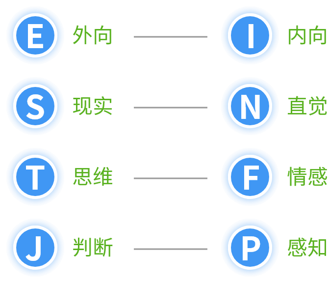
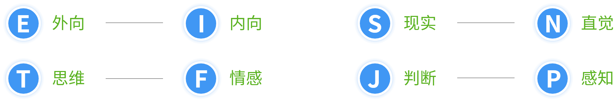

MBTI性格类型介绍
人们的性格塑成期通常在青春期，在这之后人们便具有了较为稳定的个性类型，并在随后的岁月中动态发展与完善。随着一个人年龄的增长，性格也会发生变化。按照荣格的理论，人的性格一旦成型，就很难发生变化，之所以展现不同的表现方式，正是由于环境、经历等因素的变化，性格在动态地发展，之前不太使用的功能也得到了相应的发挥。如果用左手和右手来做一个比喻的话，一个人的MBTI倾向就是他最熟悉使用的那只手，随着阅历的增加，他也开始练习使用另外一只手。
MBTI有四个子量表，分别是:
 如果只能用一个维度将人群区分开来的话，那么，这个维度应该是内外倾向，它是区分个体的最基本的维度。我们以自身为界，可以将世界分为自身以外的世界和自我的世界两个部分，也可称为外部世界和内部世界。外倾的人倾向于将注意力和精力投注在外部世界、外在的人、外在的物、外在的环境等；而内倾的人则相反，较为关注自我的内部状况，如内心情感、思想。两种类型的个体在自己偏好的世界里会感觉自在、充满活力，而到相反的世界里则会不安、疲惫。因此，外倾与内倾的个体之间的区分是广泛而明显的，并不象我们平时讲的“外倾者健谈、内倾者害羞”那么简单，具体可以从下列几个方面进行分析：
| 外向型 E | 内向型 I |
|---|---|
| 与他人相处精力充沛 | 独自度过时光精力充沛 |
| 希望成为注意的焦点 | 避免成为注意的焦点 |
| 行动，之后思考 | 思考，之后行动 |
| 喜欢边想边说出声 | 在心中思考问题不善于表露 |
| 易于“读”和了解；随意地分享个人信息 | 相对封闭，更愿意在经挑选的小群体中分享个人的信息 |
| 说的比听的多 | 听的比说的多 |
| 高度热情地社交 | 不把热情表现出来 |
| 反应快，喜欢快节奏 | 仔细考虑后，才有所反应，喜欢慢节奏 |
| 重于广度而不是深度 | 喜欢深度而不是广度 |
参照上述的“条条框框”，您能确定您的内外倾向偏好了吗？当然，不要期望每条标准都完全符合，大部分符合基本上就可以确定了。也不要要求每时每刻都以同样类型的方式行事。人毕竟生活在社会中，有时会顺应外在环境的、工作的需要调整自己的行为，再外倾的人，在权威人士面前或者十分隆重、严肃的场合，也会是个好的倾听者；再内倾的人，走上领导岗位，该发表意见的还得发表，准备充分的话，也会滔滔不绝。关键在于，我们需扪心自问：到底以什么样的方式行事，才是自己感觉最好的，最习惯的。
我们每个人都在不断接受着信息，这是我们跟上外界节拍的必要前提。但不同类型的个体接受信息的方式不同，这便有了现实型与直觉型之别。
首先，面对同样的情景，两者的注意中心不同，依赖的信息通道也不同。现实型的人关注的是事实本身，注重细节，而直觉型的人注重的是基于事实的含义、关系和结论；现实型的人信赖五官听到、看到、闻到、感觉到、尝到的实实在在、有形有据的事实和信息，而直觉型的人注重“第六感觉”，注重“弦外之音”，直觉型的人的许多结论在现实型的人眼里，也许是飘忽的，不实在的。注重细节的结果是现实型的人擅长记忆大量事实与材料，他们有时候像本“词典”，能清晰地讲出大量的数据、人名、概念乃至定义，常使其他人感到吃惊。而直觉型的更擅长解释事实，捕捉零星的信息，分析事情的发展趋向。
其次，现实型的人对待任务，习惯于按照规则、手册办事，比如照着手册使用家电，比如看着地图辨认交通路线；而直觉型的人，习惯尝试跟着感觉走，他不习惯仔细地看完一大本说明书再动手。结果呢？可能比现实型的人更快地完成了任务，也可能因为失败而须重新开始。现实型习惯于固守现实，享受现实，使用已有的技能；直觉型的人更习惯变化、突破现实。简言之，现实型注意“是什么”，实际而仔细。直觉型则更关心“可能是什么”。具体区别如下：
| 现实型 S | 直觉型 N |
|---|---|
| 相信确定和有型的事物 | 相信灵感和推断 |
| 喜欢新想法一必须有实际意义 | 喜欢新思想和概念必须符合自己的意愿 |
| 重视现实性和常识性 | 重视想象力和独创力 |
| 喜欢使用和琢磨已知的技能 | 喜欢学习新技能，但掌握之后很容易就厌倦了 |
| 留心具体的和特殊的；进行细节描述 | 留心普遍的和有象征性的；使用隐喻和类比 |
| 循序渐进地讲述有关情况 | 跳跃性地展现事实以一种绕圈子的方式 |
| 着眼于现实或现在 | 着眼于未来 |
在我们的周围，两种类型的人都会存在，当然极端典型的比较少，大多数人兼有两种特质，但其中一种会更突出一些，成为本人的特色，也由此可以确定本人的类型。使用哪种方式接受信息都有利有弊。作为个体，往往只擅长一种，了解到这点，直觉型的人就不必在百科全书式的人物面前自叹弗如，现实型的人也无需在灵动、敏感的直觉者面前不好意思了。
当然，我们在享受自我性格类型所带来的优势的同时，也不妨逐渐有意识地弥补弥补劣势。比如说，直觉型的人可多关注一些细节，而现实型的人可多留神蕴含的潜在信息。国外的研究表明，25岁以后，伴随着对于人生的反思，个体完善自我性格的倾向会更明确。确定一下您的类型，看看这种类型的优势所在。
这是从作决策的方式来看。仅看这个维度的名称，也许您会觉得，思维型的人是理性的，而情感性的人是非理性的，事实上并非如此。两类人都有理性思考的成分，但作决定或下结论的主要依据不一样。
情感型的人常从自我的价值观念出发，变通地贯彻规章制度，做出一些自己认定是对的决策，比较关注决策可能给他人带来的情绪体验，人情味较浓。
思维型的人则比较注重依据客观事实的分析，一以贯之、一视同仁地贯彻规章制度，不太习惯根据人情因素变通，哪怕做出的决定并不令人舒服。具体区别如下：
| 思维（思考）型 T | 情感型 F |
|---|---|
| 退后一步思考，对问题进行客观的分析 | 超前思考，考虑行为对他人的影响 |
| 重视符合逻辑、公正、公平的价值；一视同仁 | 重视同情与和睦，重视准则的例外性 |
| 容易发现缺点，有吹毛求疵的倾向，倾向于批评 | 给人快乐，容易理解别人 |
| 被认为冷酷、麻木、漠不关心 | 被认为感情过多，缺少逻辑性，软弱 |
| 认为坦率比圆滑更重要 | 认为圆滑与坦率同样重要 |
| 只有情感符合逻辑时，才是正确的，才可取 | 无论是否有意义，认为任何感情都可取 |
| 渴望成就而激励 | 为了获得欣赏而激励 |
不同性别的个体在这个维度上的偏好有所差异，据研究，大约2/3的女性偏好情感型，2/3的男性偏好思维型，什么原因造成的？
也许社会本身对不同性别的人就给予了不同的期待，期待女性的同情心，期待男性的冷静、客观。其实，这两种类型无所谓好或坏，重要的是理解和自己不同类型的人的做法，并且尽量避免走入极端。极端的思维倾向，可能会给人“冷酷”的感觉；而极端的情感倾向，则给人“无原则”的感觉。看看您的性格在这个维度上会有什么样的偏好？
这是从喜好的生活方式来看。如果我们看看人们的办公桌上、包内或柜子里摆放的物品，可以发现，有些人经常是井然有序，而有些人就不那么习惯于保持整齐，前者是判断型具有的特征，后者是感知型的人经常有的状态。
不仅如此，在处事方式上，判断型的人目的性较强，一板一眼，他们喜欢有计划、有条理的世界，更愿意以比较有序的方式生活。感知型的人好奇性、适宜性强，他们会不断关注新的信息，喜欢变化，也会考虑许多可能的变化因素，更愿意以比较灵活、随意、开放的方式生活。
在做决策时，判断型的人较为果断，而感知型的人总希望获得更多信息后再决断。逛了两天商场，还决定不了买什么的人，多半是感知型的。两者的具体区别如下：
| 判断型 J | 感知型 P |
|---|---|
| 做了决定后感到快乐 | 当各种选择都存在时，感到快乐 |
| 有“工作原则”：先工作再玩（如果有时间的话） | “玩的原则”：先玩再完成工作（如果有时间的话） |
| 建立目标，并准时地完成 | 随着新信息的获取，不断改变目标 |
| 愿意知道将面对的情况 | 喜欢适应新情况 |
| 着重结果（重点在于完成任务） | 着重过程（重点在于如何完成工作） |
| 满足感来源于完成计划 | 满足感来源于计划的开始 |
| 把时间看作有限的资源，认真地对待最后期限 | 认为时间是可更新的资源，而最后期限也是有收缩的 |
多数人兼具两种倾向，只是更偏向某一端。我们在日常生活、工作中，也会受其它因素影响，改变一贯的方式，如面临紧急的、或期限明确的任务，感知型的人也会果断起来。兴致所至，也会把物品收拾的整整齐齐，但这些并不是他们常有的行为方式，也不是他们内心感到真正自然、舒服的方式。
作为个体，一方面根据内心的感受识别自我的偏好，发挥优势；另一方面，则要约束一下性格的弱点。如完全的判断型，比较容易走入刻板、教条的境地；完全的感知型，则容易使事情的进行没有限制。看看最后一个维度上，您的偏好是什么？
通过对照四个维度的描述，您或许已经识别出自己在每个维度上的偏好，取每个维度上偏好类型的代表字母，即可以由四个字母构成您的性格类型。如ISFJ，即内倾感觉情感判断型；ENFP，即外倾直觉情感感知型。
四个维度、八个端点可组合成下表的十六种性格类型，您必然属于其中的一种。根据每一项倾向性的判定，最终可以得出十六种组合，如下表所示。这其中的每一种都将是独特的类型，没有哪一种类型最好，也没有哪一种类型不好，要记住的是，这就是您，具有独特风格的您。
| 内倾感觉思维判断 （ISTJ） |
内倾感觉情感判断 （ISFJ） |
| 内倾直觉情感判断 （INFJ） |
内倾直觉思维判断 （INTJ） |
| 内倾感觉思维感知 （ISTP） |
内倾感觉情感感知 （ISFP） |
| 内倾直觉情感感知 （INFP） |
内倾直觉思维感知 （INTP） |
| 外倾感觉思维感知 （ESTP） |
外倾感觉情感感知 （ESFP） |
| 外倾直觉情感感知 （ENFP） |
外倾直觉思维感知 （ENTP） |
| 外倾感觉思维判断 （ESTJ） |
外倾感觉情感判断 （ESFJ） |
| 外倾直觉情感判断 （ENFJ） |
外倾直觉思维判断 （ENTJ） |